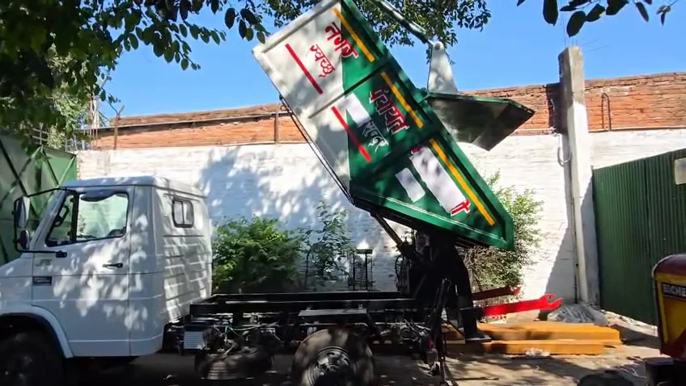

Established in 2011
Globe International manufactures and supplies engineering equipment from Unnao, Uttar Pradesh.
MANUFACTURER & SUPPLIER · UNNAO, INDIA
Globe International manufactures equipment for waste collection, road and drain cleaning, public sanitation and agricultural transport. Based in Unnao, Uttar Pradesh, we deliver across India.

GLOBE AT A GLANCE
Globe International manufactures and supplies engineering equipment from Unnao, Uttar Pradesh.
Our team brings more than 25 years of manufacturing experience to equipment for municipal, agricultural and public works applications.
Share the delivery location and required date when you enquire so we can discuss the timeline for your order.
THE EQUIPMENT RANGE

Drain & road cleaning
A trailer-mounted unit for suction and water jetting.
EnquireTHE MANUFACTURER
Established in 2011, Globe International brings more than 25 years of team experience in manufacturing. We focus on build quality and work to keep the turnaround as short as the equipment configuration and order requirements allow.
About Globe